09.03 淡水與八里空拍紀實
飛越淡水河口，現代淡江大橋的宏偉鋼索正跨過昔日的渡船水路。鏡頭掠過市街與漁人碼頭，望向退潮時浮現的心型石滬與泥灘波紋。隔著寬闊的河面，大屯山與觀音山依舊對望，靜靜映照著數百年來人群跨河交流與出海航行的痕跡。
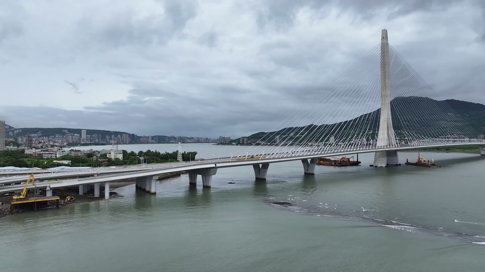
欣賞清晰的空拍影像，請在 YouTube 畫質設定中選擇 1080p。
在 YouTube 觀看換一個高度重新觀看
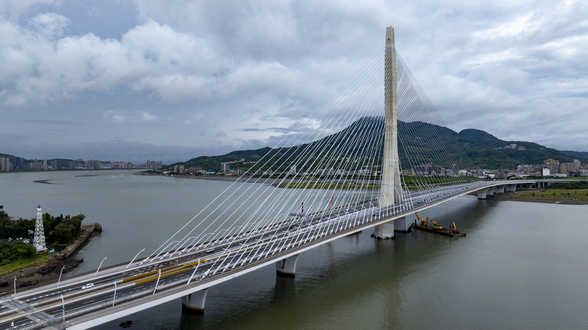
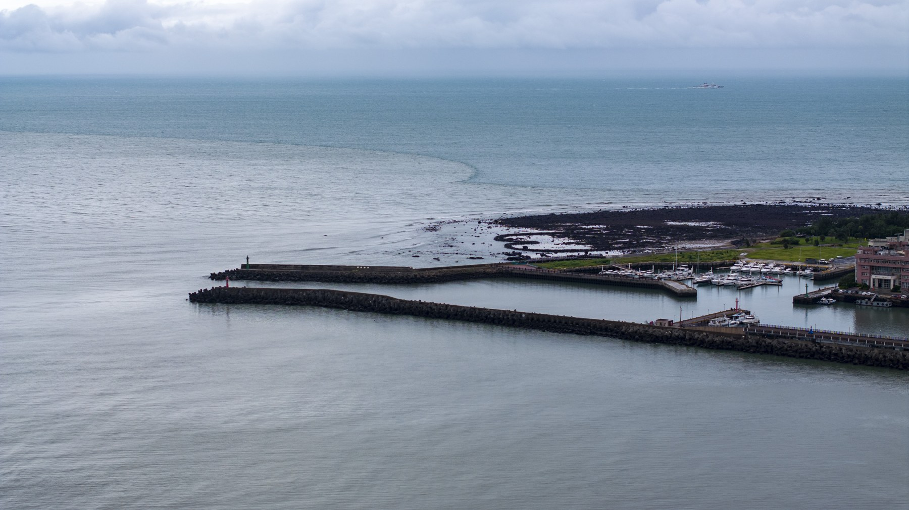
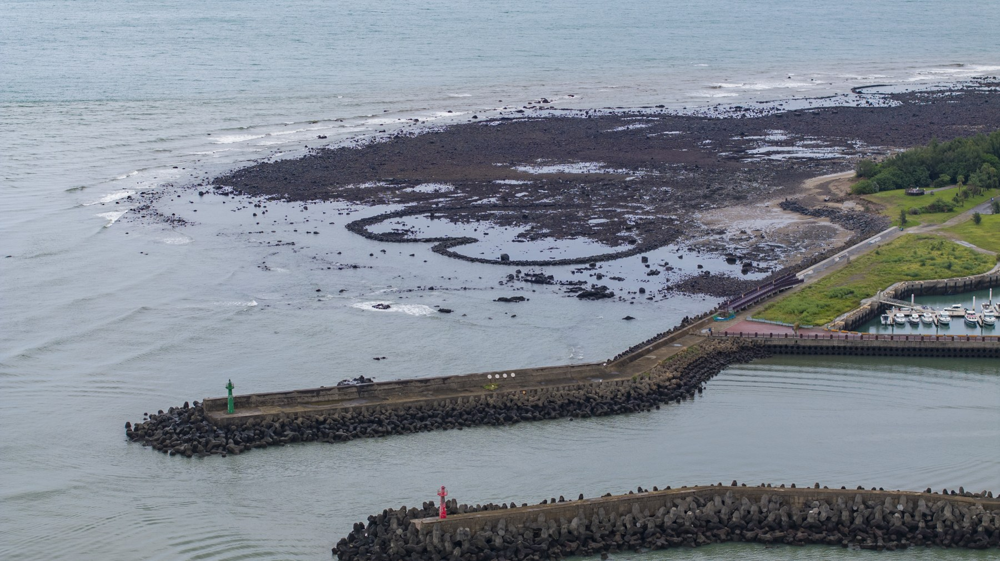
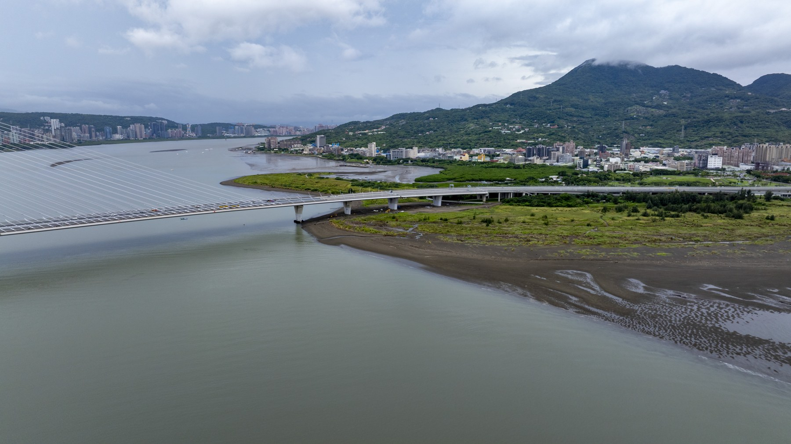
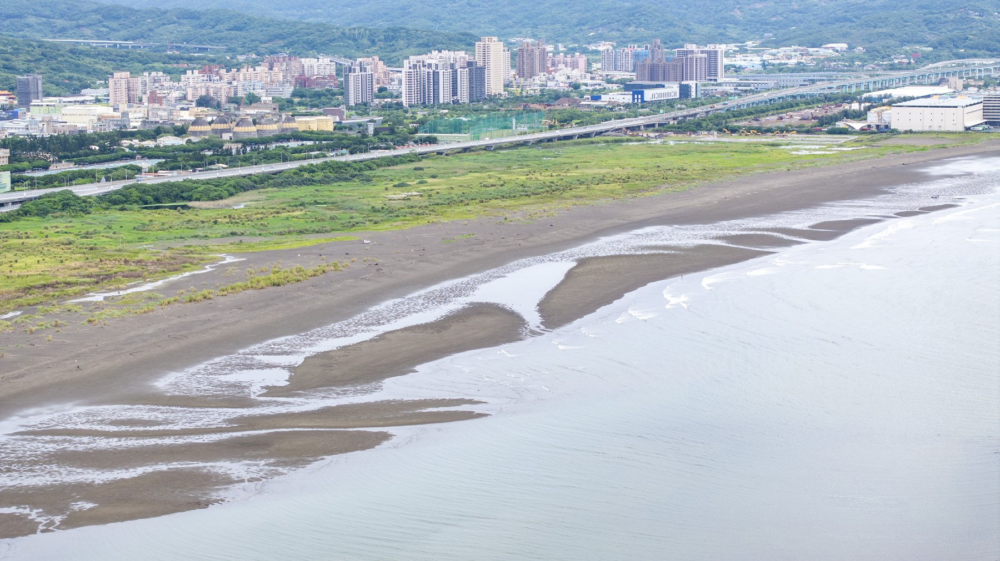
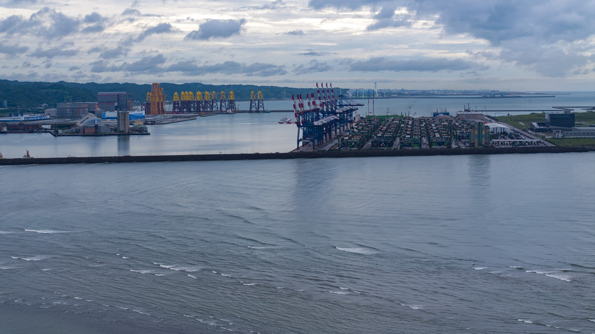
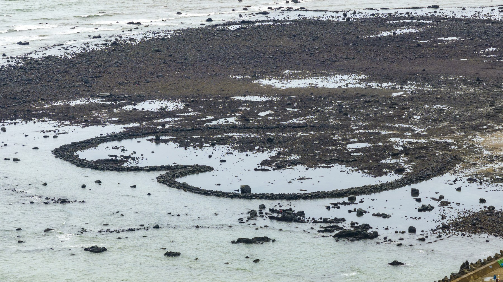
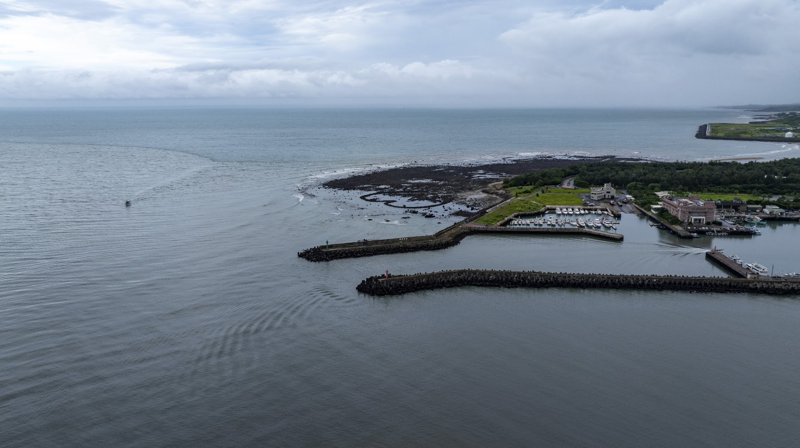
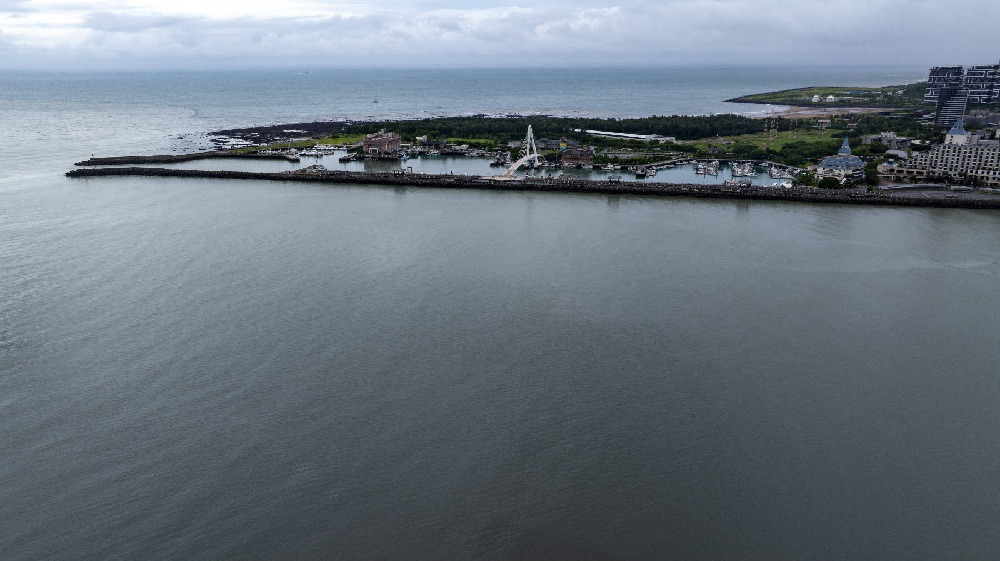
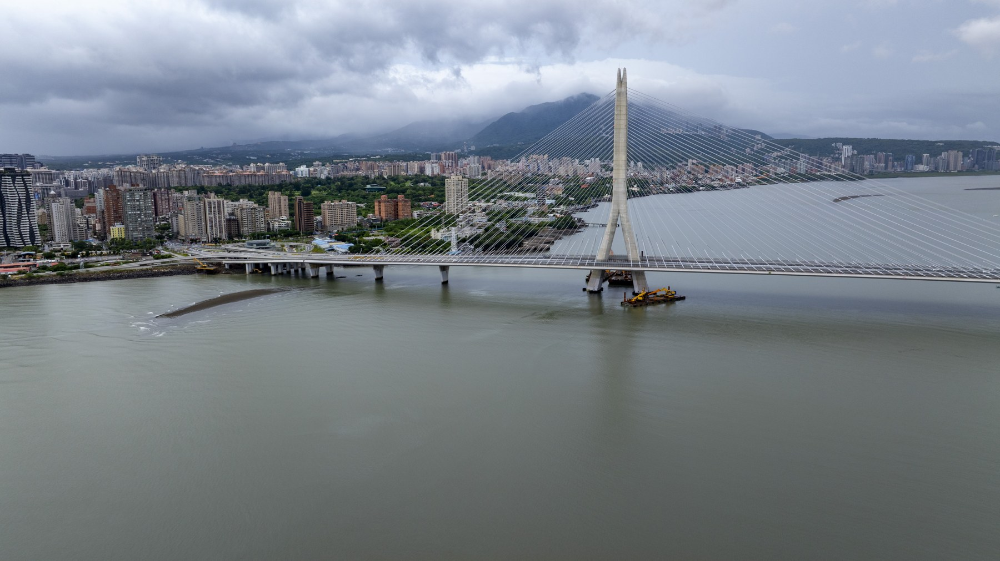
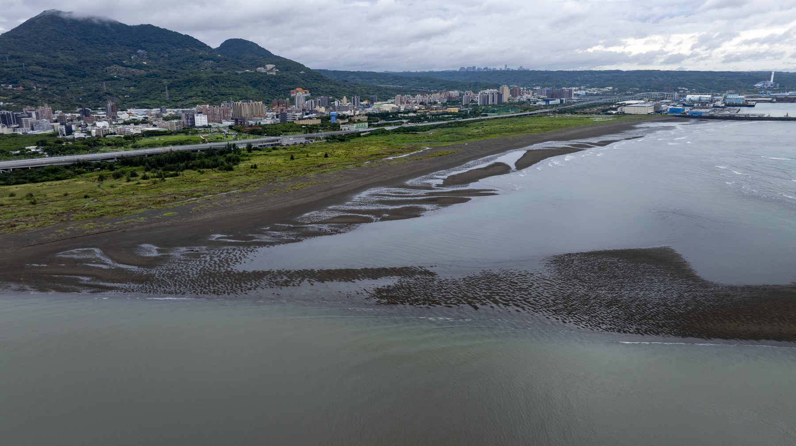
淡水社與八里社田野調查空拍與影像採集通告單
南港社大—消失的台北原住民故事班。
活動資訊與集合地點
採集日期：2026年9月3日（星期四）09:00集合。
集合地點：淡水漁人碼頭入口堤防（Google地圖連結），請看附圖位置。
個人必備裝備：攝影器材、防曬帽、飲用水、防曬／防蚊用品、太陽眼鏡（空拍直視高亮度天空時可維持視野清晰與眼部防護）。
移動方式：定點集結後，空拍創作者與地面拍攝需同時進行，地面移動結合 Ubike 騎乘移動，以靈活穿梭於河岸步道、老街巷弄及自然保護區周邊。
當天確認是否前往八里。若需要前進八里，暫定11:10新北考古公園集合地點。
器材清單
空拍設備：DJI Mavic 3 Pro（含電池3顆、控制器）。全景攝影：Insta360 X5（全景相機）、高角度延伸桿。口袋攝影：Insta360 Luna Ultra（口袋隨身相機）。單眼相機：Sony A7C+28-75鏡頭。收音設備：無線麥克風組。器材由老師提供。
拍攝重點與鏡頭設計
本計畫旨在透過影像重建凱達格蘭社群（淡水社、八里社、北投社遷居路線）的歷史生活空間想像，並提供後製合成地圖與虛擬人物疊加之素材。
淡水河口意象與淡江大橋。空拍：三鏡頭切換（24mm廣角呈現河口宏觀氣勢、70mm／166mm中長焦壓縮淡江大橋與河口對岸八里觀音山的空間關聯）。地採：利用 Insta360 X5 搭延伸桿進行低角度航行鏡頭（模擬船隻運河視角），提供後製疊加古航道地圖或虛擬帆船之基底。
淡水社生活區域與老街（建議非上課時間加拍鼻頭街／捷運站河岸）。地面拍攝與 Ubike：騎乘 Ubike 進行移動式第一人稱視角（FPV）鏡頭，記錄舊時聚落與現代河岸交錯的空間感；走訪鼻頭街捕捉傳統聚落紋理與地形起伏。
八里挖子尾（建議非上課時間加拍北投社遷居處）與十三行、大坌坑遺址。空拍：俯瞰紅樹林濕地與古河道交會處，捕捉「水陸交界聚落」的生存環境。360全景：於遺址與濕地節點設立 Insta360 X5 全景站點，後製可進行720度空間還原，並疊加凱達格蘭族傳統家屋與生活圖像。
空拍紅區限制與作業注意事項
淡水與八里沿岸部分區域臨近機場管制區延伸段、軍營、特定自然保護區或港區，屬於紅區（禁止飛行）或黃區（限高），請全體人員嚴格遵守以下守則。
起飛前合規確認：使用無人機管理資訊系統或官方 App DroneMap 實地確認當前坐標之空域分級與限高規範。紅區內絕對禁止起飛、穿越。
黃／綠區邊界作業：若於合法空域邊緣作業，嚴禁切入紅區範圍；拉高飛行時注意60公尺限高、120公尺絕對限高。
視線內飛行（VLOS）：必須保持目視飛行，並由一名組員擔任「空拍觀察員」，專注監視周邊鳥類（如河口鷺鷥群）、避開電線與高架建物。
安全應變：強風或突發狀況時立即切換返航；避開人群密集上方飛行。
多元影像採集技術與田野重點
三鏡頭高空／中空視角。設備應用：DJI Mavic 3 Pro。捕捉淡水河口大尺度地貌、淡江大橋橫跨兩岸的現代與古代地理對照，作為後製動態3D地圖疊加的主圖層。
Ubike 移動式流動鏡頭。設備應用：Insta360 Luna Ultra。騎乘於河岸自行車道與鼻頭街巷弄，拍攝連續性街景與在地生活氣息，創造具臨場感的田野行進視覺。
360度沉浸式環景。設備應用：Insta360 X5＋延伸桿。於挖子尾濕地、遺址現場進行定點或高空「假空拍（延伸桿）」採集，後製可任意重構鏡頭角度，並供 VR 視覺呈現。
現場環境音與口述收音。設備應用：無線麥克風。採集河岸風浪聲、濕地生態音及現場團隊對歷史地理的即時討論，為後續影片提供高品質聲景（Soundscape）。
集合地點與空域圖
預計空拍起降地點（觀海路尾），近鄰紅區，務必注意起飛後僅能往河中央飛，左右後面都是紅區。
八里空域圖，白色區域是主要飛行拍攝起降區域，11:10新北考古公園集合地點。
在地圖上讀回風景
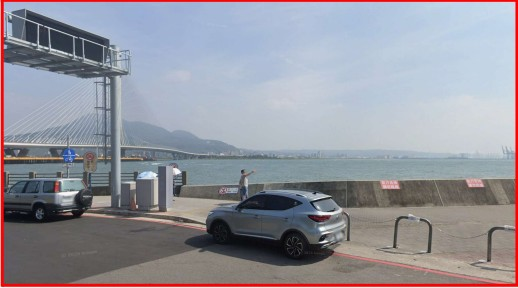
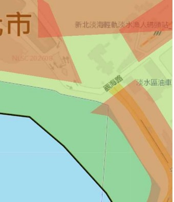
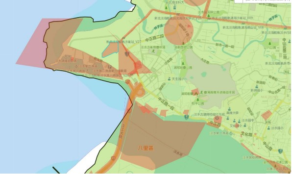
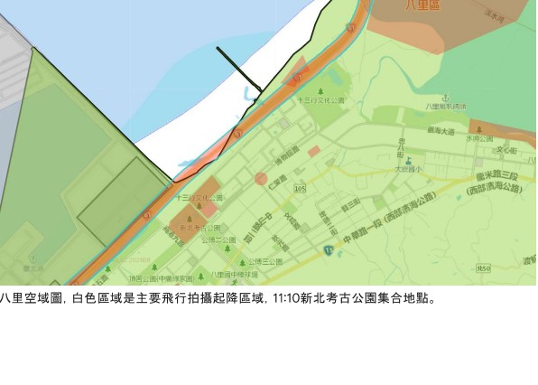